What this page covers
CAD examples and a practical printer retrofit.
The CAD evidence shows mechanism reasoning for the hand, an M3ID printer toolhead retrofit, printable geometry, and the custom startup G-code needed to make the modified machine usable.
- Hand mechanism: physical constraints behind the compliant finger and the current/contact limit reasoning.
- Printer retrofit: carriage interface, Smart Orbiter-style right extruder, cooling duct, stock left extruder, and service access.
- Machine behavior: Klipper startup logic, purge/wipe paths, slicer variables, and dual-extruder preparation.
mk19 mechanism reasoning
The hand project combines controls and simulation; this section focuses on the physical design decisions that make the finger testable as a mechanism.
Sliding drive joint
The motor disk drives the bar while allowing translation, which reduces parasitic constraint from eccentricity and printed tolerance stackup.
Bending membrane
The compliant drive coupling bends when the proximal link is blocked, letting the distal link continue wrapping rather than forcing an immediate stall.
Hard stop and stiffness
The physical stop near 90 deg, flexure stiffness assumptions, and proximal stiffness channel make the hand testable as a mechanism rather than only as a servo assembly.


M3ID printer retrofit
Right-extruder modernization for a proprietary M3ID printer: the stock left extruder remains available for soft filament while the right side is adapted for a Smart Orbiter-style direct-drive toolhead, added cooling, and Klipper-based operation.
Mechanical adaptation
The mount preserves the proprietary carriage interface while creating a new toolhead envelope for the replacement right extruder, blower duct, hotend access, and mounting bosses.
System conversion
The hardware change pairs with a control-stack migration from the printer's proprietary OctoPrint-based workflow to Klipper, allowing custom configuration, macros, and G-code behavior to be documented with the CAD.
Material capability
Keeping the left extruder stock protects the flexible-filament path, while the right extruder upgrade targets more consistent rigid-filament extrusion and easier service access.
Custom start G-code
The startup routine handles dual-extruder preparation rather than relying on a generic slicer template: it selects the bed mesh and bed temperature from the active material pair, heats both hotends, runs separate purge/wipe paths for T0 and T1, temporarily reduces flow during purge, parks each tool, applies ooze-prevention standby temperatures, homes the tool axis, and starts the job in relative-extrusion mode.
Why it matters
The code is modest by itself, but it documents the machine-integration work behind the retrofit: coordinating stock and upgraded extruders, preventing startup contamination, making dual-material jobs repeatable, and tying slicer variables into the Klipper-controlled machine behavior.

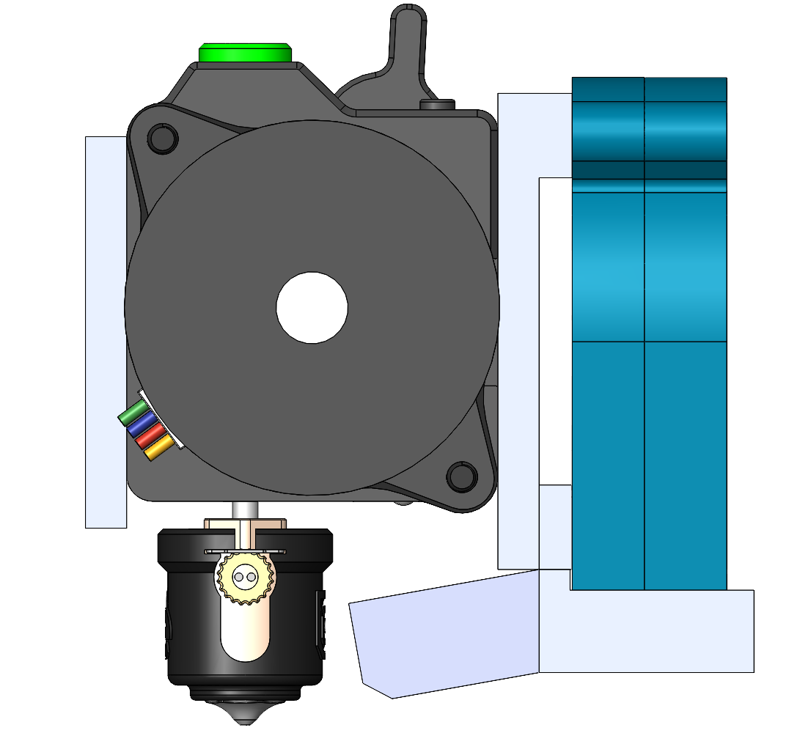
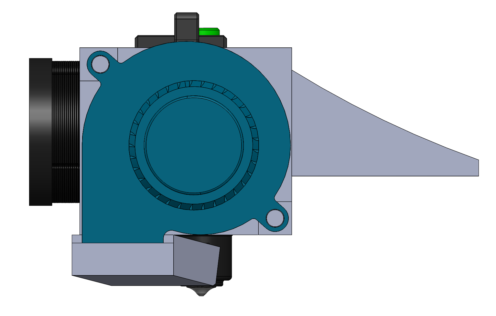
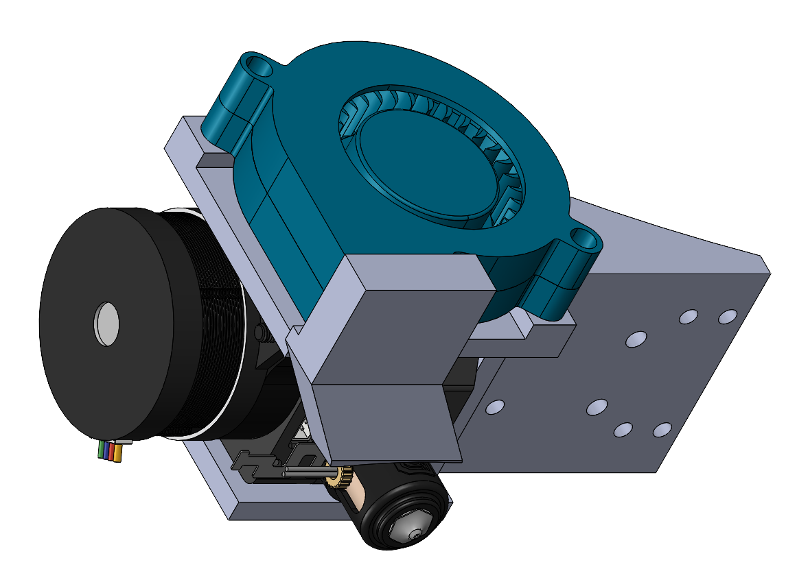
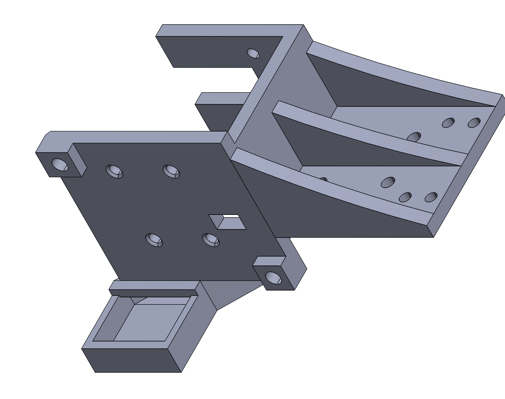
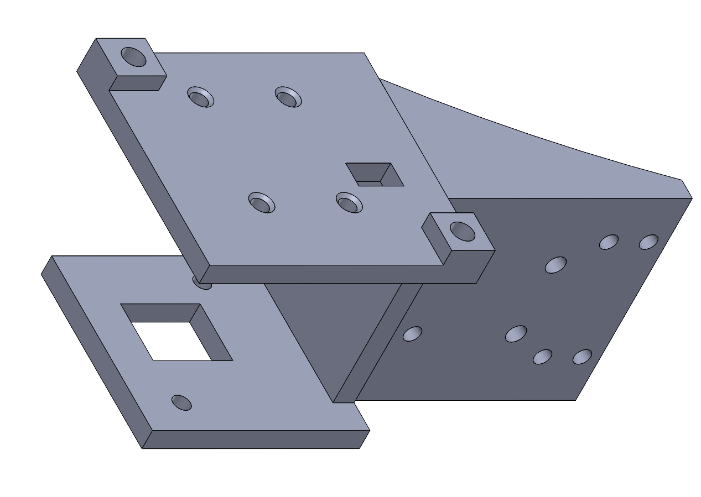
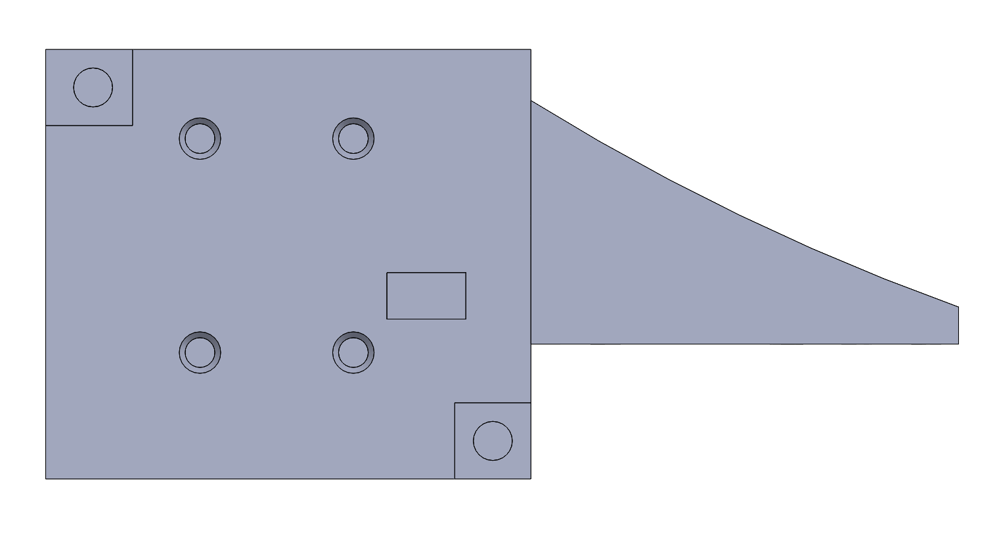
Physical retrofit
The CAD package was installed on the real printer carriage.
The hardware photos connect the rendered design to the built machine: the modified right extruder rides on the same rail as the stock left extruder, while the green printed adapter carries the replacement toolhead, blower, wiring, and filament path.
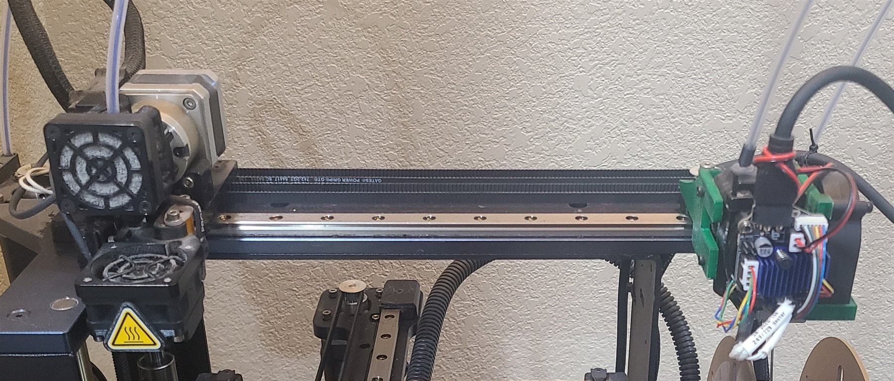
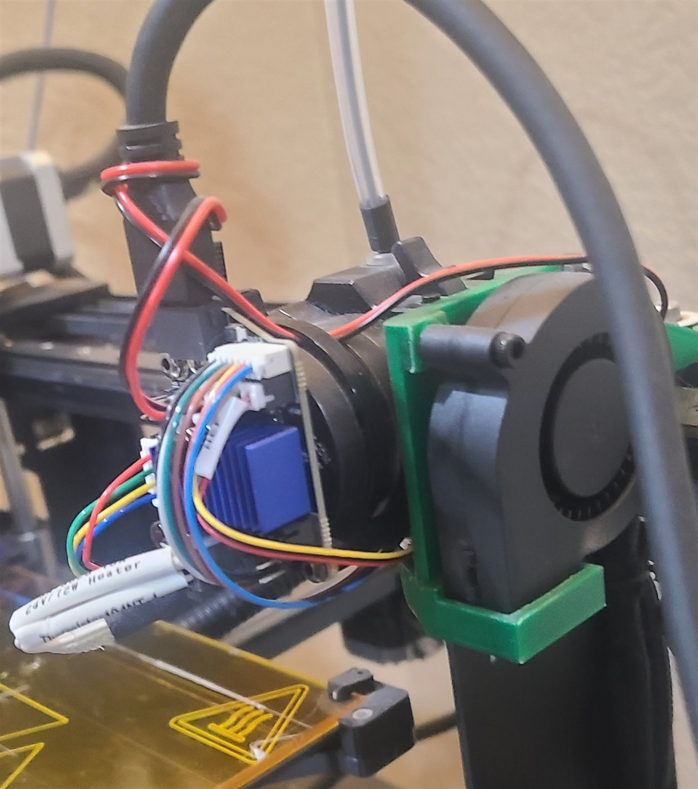
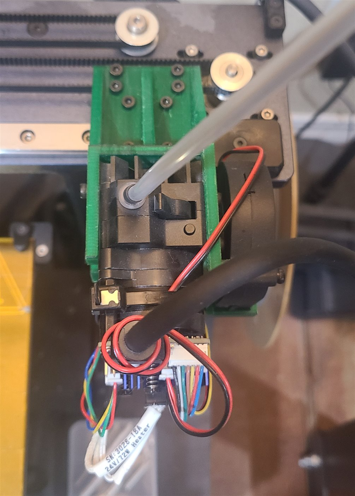
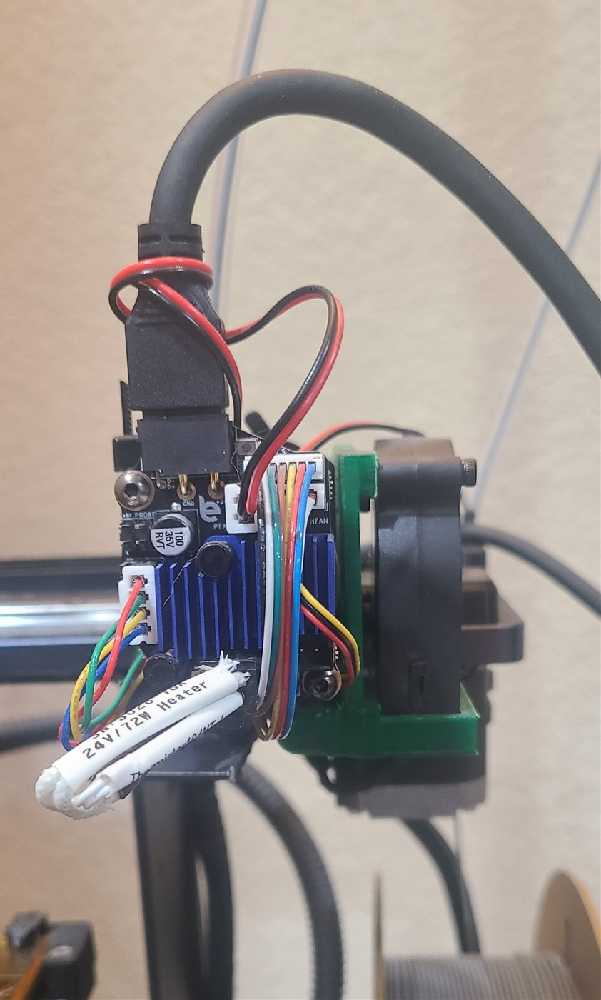
Printable FDM geometry
A compact product-style CAD exercise focused on printable geometry, transitions, and packaging views.
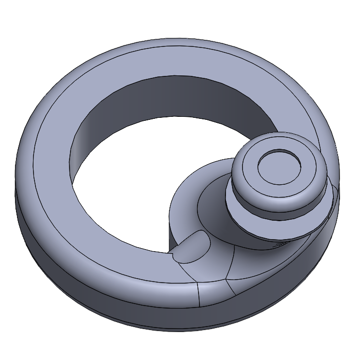
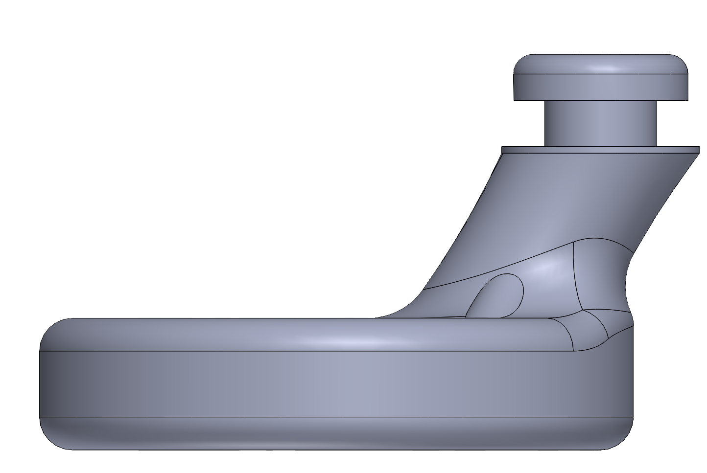
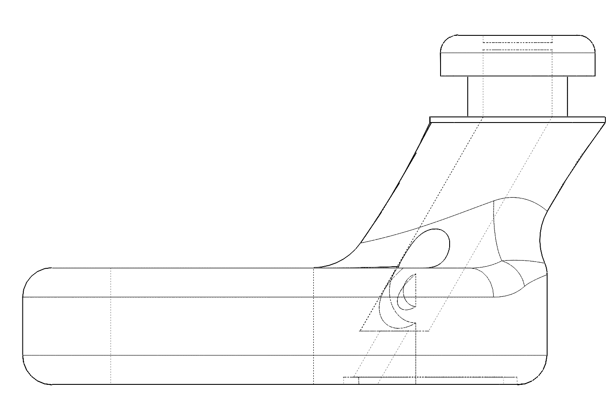